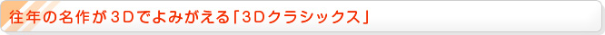

『3Dクラシックス エキサイトバイク』は、「スーパーモトクロッサー」と呼ばれるバイクを操作してタイムを競う、横スクロール型のレースゲームです。
ゲーム画面は、もちろん3D表示に対応しています。3Dボリュームを上げると、コースの起伏が飛び出して見え、スタンドの奥行きも増して、立体的に見えるようになります。実際にプレイしてみると、以前よりコースが広くなったような感覚があり、プレイの臨場感もグッとアップしています。
コースの配置を覚えて、スーパージャンプ台に乗って一気に障害物を飛び越したり、「クールパッド」の上を通過するとエンジンの温度が下がるので、その直前までターボを全開にしたり。はたまたタイムそっちのけで、いかにほかのバイクを後輪で引っかけて転倒させるかといった遊びも、以前と同じようにできます。
また、十字ボタンの左を押すと、ウイリー走行ができます。筆者はウイリーをしないと転倒してしまう小さな障害物のことを忘れていたので、転倒した瞬間にそのことを思い出して、非常に懐かしく感じました。
さらに『エキサイトバイク』の名物だった「デザインモード」も、しっかり搭載されています。パーツを自由に配置してオリジナルのコースを作れば、友だちにプレイしてもらったり、タイムを競争したりして、長く楽しく遊ぶことができるでしょう。
『3Dクラシックス ゼビウス』は、戦闘機「ソルバルウ」を操作してハイスコアを競う、縦スクロール型のシューティングゲームです。
海や川、森や砂漠など、敵の建物が配置される地上マップの美しさと、細かく設定された敵キャラたちが織り成す世界観は、かねてから『ゼビウス』の最大の特徴でした。この「3Dクラシックス」版では、かつてのステージや敵キャラが再現されているだけでなく、空中の敵と地上の敵の高低差を3Dで立体的に見ることができるようになっています。
3Dボリュームを上げてプレイしてみると、「ソルバルウ」や空中の敵が手前に浮かび上がり、画面の両サイドには雲が流れて、空を飛んでいる感覚がリアルに伝わってきます。「ブラスター」を発射するとワンテンポ遅れて地上の敵に着弾するタイミングは昔のままですが、これも3Dだと空中から地上に弾を落としているのがよりハッキリわかります。
自機に向かってクルクルと回転しながら飛んできて、破壊することができない黒い板「バキュラ」をはじめ、巨大な軌道浮遊要塞「アンドアジェネシス」などなど、懐かしい敵キャラたちも続々登場します。しかも3Dになって、懐かしさと同時に新鮮さも感じられるはずです。
何もない地上に「ブラスター」を撃ちこむと出てくる隠しキャラである「ソル」や「スペシャルフラッグ」も、以前と同じ位置に隠れています。はじめての方は新鮮な気持ちでハイスコアを狙って、またかつてプレイしたことがある方は記憶を頼りに思い出しながら探してみると楽しいでしょう。
※
ニンテンドー3DSの3D映像は本体でしかご覧いただけません。掲載している画面写真はすべて2D表示のものです。